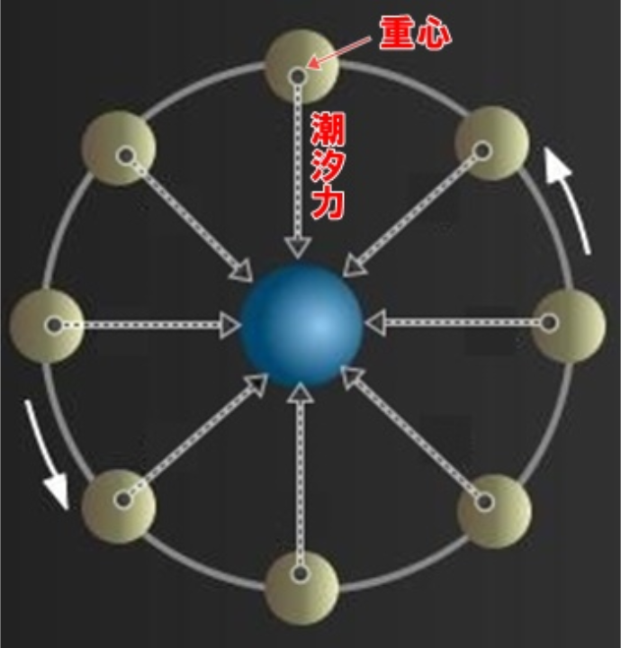
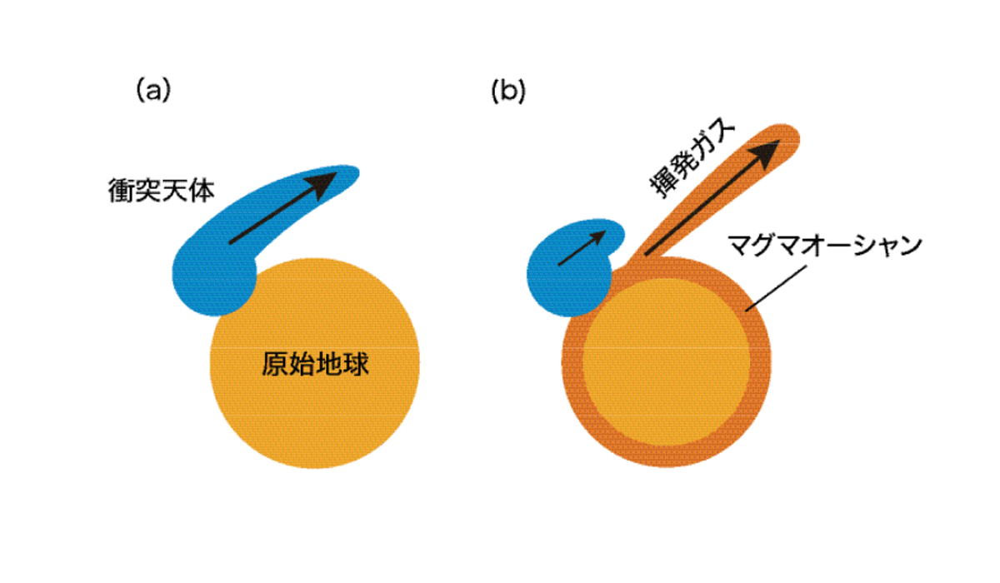

(2024/03/13)
地球の概要
太陽系第三惑星地球です。
太陽系で唯一生命体が存在する惑星です。
よく地球は1年間で太陽の周りを一周すると言われていますが、厳密には違います。
実は地球は365.26日で約6時間太陽の周りを1週するのに足りません。6x4=24なので4年に一回うるう年があるわけです。
他にも、不定期に7月1日午前9時前や(※日本時間)1月1日午前9時前に1秒増えるうるう秒もあります。(57,58,59,60,0,1,2……)
地球に生命が住める理由

惑星に生命が存在するためにはよくハビタブルゾーンの中でなければいけないと言われます。
ハビタブルゾーンとは、水が液体の状態で存在できる範囲のことです。これより遠いと氷に、これより近いと蒸発します。
ハビタブルゾーンの距離や大きさは恒星のエネルギー量で変化します。
水以外にも多くの条件が必要
しかし、ハビタブルゾーン内にあるからと言って必ず生命が存在するかというと、そうとは限りません。
大気や磁場がないと水があっても蒸発してしまいます。火星はこれにより水が存在しません。
他にも、重力の大きさも重要です。重力が強いとより厚く大気を集めます。そうすると温室効果ガスが多く集まり、水が液体として存在できなくなります。
そして今のような適切な自転速度も必要です。自転が遅すぎると、同じ面に熱が集中するため生命が生息できません。
さらに23.4°自転軸が傾かなければ太陽からの熱が偏るので、これも重要な条件です。
月の概要
地球の唯一の衛星です。
27日と8時間で地球を一周します。公転周期と自転周期は同じです。
月は大きさが地球の1/4、質量が1/81と異常に大きな比率を持ちます。
月の重力により地球の自転にはブレーキが掛かっているため地球の1日が24時間となっています。
他にも、重力により細かな隕石を月が受け止める防御の役割も行っています。
月には大気がないため隕石と衝突した際に出来たクレーターが風化せずに残っています。
なぜ月は常に同じ面を地球に向けるのか

上の概要を読んでなぜ月の公転周期と自転周期が同じなのか不思議に思ったことかと思います。
原因は重力によるものです。重力が主星(※回る中心にある星)の重力と共鳴することで、
周回する星の重心が主星側にずれるため常に地球に対して同じ面を向けるようになります。
なぜ月は他の衛星に比べて大きいのか
月は他の衛星との比率と比べ以上に大きいです。なぜそのようなことが起こるのか様々な説が提唱されているので、紹介します。
遠心力説
太陽系ができたばかりのときの原始地球は非常に高温なため、遠心力で少しずつちぎれていった。という説です。
重力による補足説
別の場所から飛んできた惑星が地球の重力により捕まり、地球の周りを周回するように案ったという説です。
この二つの説は矛盾が多く現在では余り支持されていません。
ジャイアントインパクト説
有名な説です。この説は火星サイズの惑星が地球に衝突してその破片が地球の周りに集まりその結果月が形成されたという説です。
この場合、衝突するときの角度が1°でも異なれば地球は木端微塵に吹き飛んでいました。
マグマオーシャンからできた説
ジャイアントインパクトで形成された説では一つ矛盾があります。このような方法で衛星ができる場合、
衛星の主成分は衝突してくる側の成分が多くなります。しかし、月面の岩石の調査を行った結果、地球と同じ岩石の成分が検出されました。
その矛盾を解決するために生まれた説です。

これは簡単に説明すると、原始地球の表面にマグマが大量にあり惑星と衝突した際に、
大量のマグマが飛ばされてそれらが集まり固まって月が形成されたという説です。
宇宙豆知識(月がなくなるとどうなる？)
さて月がなくなるとどうなるでしょうか。序盤に月の重力が地球の自転にブレーキをかけていると書きました。
月がなくなったら自転はどれほど早くなるのでしょうか。初期の地球は自転周期が8時間でした。何と3倍まで早くなります。
自転が早くなるとその分大気の流れも速くなります。その為、地上では嵐が吹き荒れることになります。
他にも月の重力がなくなることで地軸の傾きが不安定になり気候が極寒と灼熱の二極化していきます。
そして本来月に落ちていた隕石が地球に落ちてくるため、生命が住めなくなります。
因みに月は年間3cmずつ離れていってます。